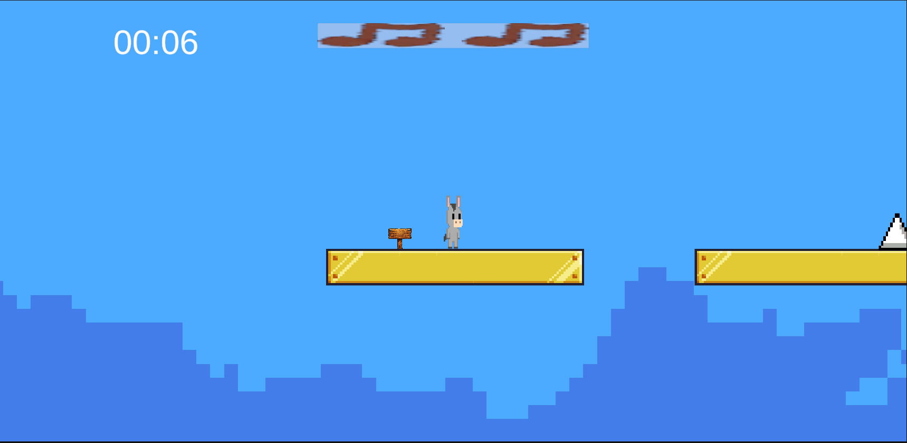
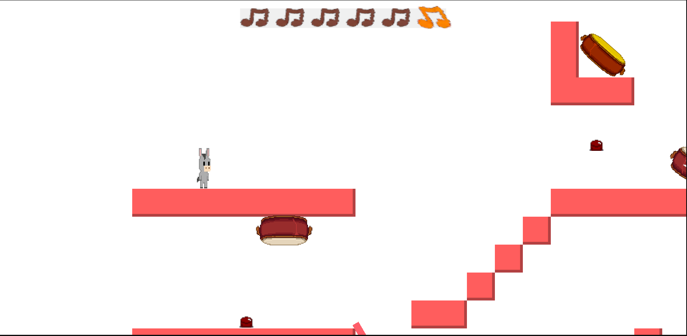
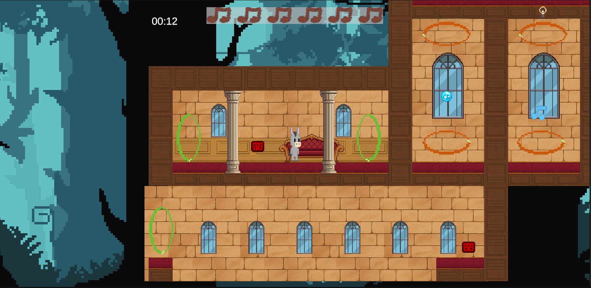
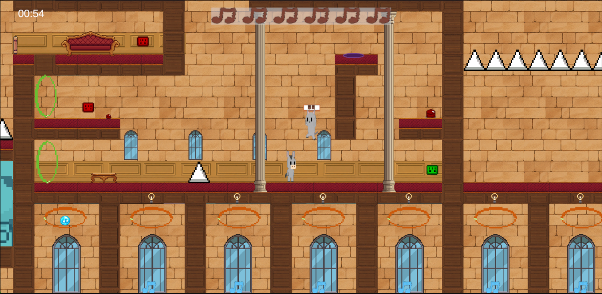
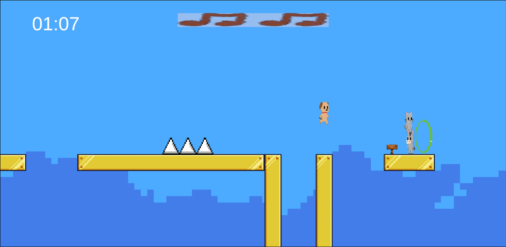
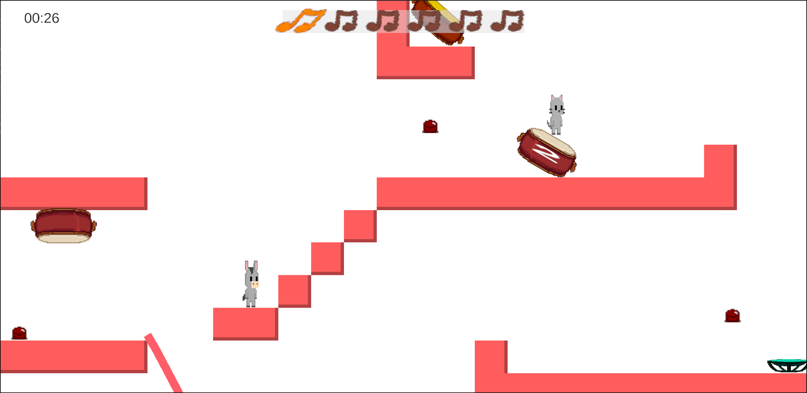
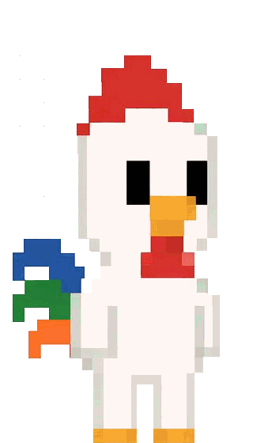
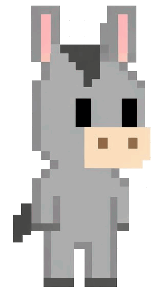

Notes of freedom is a multiplayer 2D-platformer where your goal is to guide a ball into musical notes. To unlock the next stage and escape the mad scientist, you have to hit all of the notes in one swoop.
Once upon a time the animals lived peacefully in the woods. They knew no trouble until one day, when their friends started disappearing one by one. The animals became confused, nothing like this had ever happened to them. So they sent out a small group to investigate. Four animals volunteered and went deep into the forest, where they discovered that a mad scientist had moved into the forest. But just as they came upon this discovery they were ambushed. When they wake they find themselves in a cage made of strange material, and when they rise they walk on two legs instead of four. A strange man appears before them. He explains that he is a scientist and has given them the power of humans. In return they shall work for him endlessly. As they see their friends captured around them, they make a plan to escape. But on the way they find that the only way to open the doors of the castle is to play musical devices set up in each room. Will they make it out and free their friends? Can they play the notes all the way to freedom?
As one of the main Programmers and Game designers, Yuto has implemented one of the levels.

As the Sound designer and Music Composer, Linus has created and developed the musical components and sound effects for the game. Since the game has a focus on music these parts are heavily connected to the game mechanics as well.
Text about Liu

As one of the main programmers, Markus has implemented a lot of the mechanics and systems in the game. He also designed the Tutorial stage and Teleportation stage. And creates the games website.